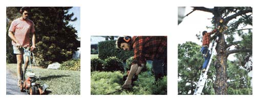

A Successful Lawn Service Business
How to start a lawn-mowing and tree-trimming business, including starting up, getting and keeping customers, protection and clothing.
By Jim Cameron
July/August 1983
Not too many people can claim to earn a handsome income by doing work that their neighbors likely consider routine weekend chores . . . but I can! You see, lawn maintenance is my profession, and-with six years of experience behind me-I'm able to tell you that it's a great way to earn a living. As the operator of my own lawn care business, I work outdoors . . . meet lots of interesting people . . . perform a valuable service for my customers (many of whom are elderly and really appreciate my help) . . . set my own hours and work schedule . . . and am able to save up a goodly amount each month for my eventual "retirement" to a country spread (where, of course, much of the equipment I've acquired will help me tackle my homesteading duties).
My story is, I think, pretty typic al of those of most people who successfully start in this business, so I'm willing to bet that the details and tips provided in this article could help you initiate your own "mow for money" enterprise. Now, since I'm located in an urban area, I work primarily on small- to medium-sized manicured yards . . . but the basic "rules" of running a lawn maintenance service can be easily transferred to a more "countrified" setting, in which you might for example-be mowing open fields and/or large estate grounds. And although I'm able to do the same sort of work year round (thanks to southern Florida's warm temperatures), aspiring lawn service contractors in more northern states could, I'm sure, shift the emphasis of their businesses in fall and winter . . . perhaps to such activities as mulching, vacuuming leaves, turning under garden plots, cutting hay, or plowing snow. You can see, then, that lawn care is a tremendously versatile occupation . . . one which can be readily adapted to most locales, climates, and startup budgets. No matter how grand your long-range plans, it's best to think small at first . . . and to treat the work-at least for a while-as a profitable sideline to whatever other secure source of income you might already have.
IN THE BEGINNING . . .
I launched Chautauqua Lawn Service in 1977, while I was still working steadily at con struction jobs. A neighbor of mine had a booming landscaping business, and-as soon as I'd gathered the necessary equipment (an edger, a 19-inch mower, trash cans, and a rake)-he referred a few of his "overflow" accounts to me. I initially limited my yard work to the one or two days each week I had off from my regular job. Once summer arrived, though, and the grass really began to grow, I rapidly picked up more clients . . . and before I knew it, I was able to quit construction work altogether and devote all of my energies to my new full-time business. Many of my first accounts were low-paying (averaging between $35 and $45 a month) and seasonal (that is, I worked only half-time, and received half-pay, during the winter months) . . . but that's par for the course for a beginning groundskeeper.
Furthermore, my capital expenses for the first couple of years were minimal, since I didn't-during that time-feel the need to add to the equipment I'd started with . . . and I was able to haul those tools in an open wooden utility trailer behind my Volkswagen. I did have to buy city and county occupational licenses, but they total only $50 annually (while allowing me unlimited free dumping privileges at the city landfill). Eventually, as the business continued to grow, I invested in better equipment (moving "up the ladder" to Snapper self-propelled mowers and acquiring a Billy Goat vacuum) and bought a pickup. Today, my rig includes a newer, full-sized truck, a 12-foot aluminum-roofed trailer, and a small pickup to use when handling odd jobs or running errands. And although the total number of accounts varies from season to season, I'm able to maintain a year-round workload of between 30 and 35 accounts, which pay anywhere from $65 to $175 a month. Heck, I've even taken on a permanent, part time helper . . . my wife Jeanne!
Once you've built up a steady supply of customers, you can expect to net at least $2,000 each month in this business. Of course, you'll have to start small. And the best way to bag your first few customers, I think, is to solicit references from an acquaintance who's already established in the field . . . or befriend a landscaper whose work you admire. Such a mentor might-in addition to bringing you clients-provide you with a valuable hands on introduction to the basics of lawn maintenance. Many people seem to think that a person should study landscape management or horticulture for at least a year or so before "setting up shop", but I believe you can gain just as much know-how by volunteering to help an established lawn service operator on your days off and on weekends. (Believe me, you'll learn a lot that way . . . in a hurry!)
Once you're ready to strike out on your own, you should have-all either new or in excellent repair-a 19- or 21-inch mower (with two or three extra blades), an edger, a chain saw, a couple of gas cans and a case of oil, a leaf rake, a broom, trash cans or large plastic garbage bags, hand clippers, and whatever tools you'll need for equipment repair and maintenance. These are the "bare bones" necessary to set up any sort of lawn-mowing operation . . . but-once your business takes off you'll probably want to add a gas-powered hedge trimmer, a cord-type trimmer, a vacuum sweeper, and (for big areas) a 28- or 30-inch riding mower. (When shopping for a rider, I'd recommend that you look not so much for the widest cutting swath you can find, but for the versatility offered by the machine. Try, for example, to purchase one that has a vacuum component to suck up leaves and other debris as it cuts.) Then, if you decide to tackle tree work, you'll also need extension ladders, a polesaw, a heavy-duty chain saw, long-handled loppers, and some sort of safety harness.
Equipment is, obviously, a lawn service operator's biggest expense, and it makes good business sense to take care of that investment by faithfully and properly maintaining each piece. Get to know every engine you own (if necessary, take a "small engine" course at your local vocational school), and service each one according to the manufacturer's specifications. (I change the oil in my machines daily during the summer, and remove and wash the air filters each evening.) It's also wise to establish a rapport with the staff of a nearby lawnmower repair shop, so you'll be able to receive prompt attention when something serious goes wrong with your equipment.
Finally, buy a good bench grinder and use it to sharpen your mower blades daily. (Blade grinding is my last task before I call it a day.) Nothing will affect your work more directly than will the state of your mower blades: A dull edge will leave even the most painstakingly cut lawn looking ragged and dried out. So sharpen your blades every night . . . and your customers will love you for it!
HOW TO GET-AND KEEP-CUSTOMERS
Once your business is up and running, I think you'll find-as I have-that the best way to build a clientele is simply to do a good job on every lawn you visit. If you have a professional attitude toward your tasks, I can just about guarantee that-if you're in an area with enough prospective customers and not too many competitors-you'll soon have more than enough offers of work. In fact, during my six years of following that basic policy, I've never had to spend one cent on conventional advertising: My business has grown to its present size by word-of-mouth endorsement alone! Customers recommend me to their friends and neighbors . . . a doctor, who employs my services at his home, passes the word to his colleagues and patients . . . and occasionally someone will even admire the looks of a lawn I'm working on, and stop to ask me to give an estimate on caring for his or her property!
And that brings up another subject: You should always be willing to prepare an estimate, even if the job at hand doesn't look like something you feel you can bid on competitively. After all, the person may own a rental unit somewhere else which needs lawn care . . . or he or she may be a realtor who will later need you to spruce up the grounds of a slow-selling house. I've also found it a good rule to be unfailingly polite to all potential clients, even if they don't seem immediately receptive to my estimate. Some folks just need to mull things over for several months (or maybe rearrange their budgets a little before taking action). You never know when the call may come!
Although I haven't had to advertise, you may feel the need to do so during your first few months in business. Many lawn services in my city buy listings in the Sunday classifieds or in the Yellow Pages . . . and I've also seen their notices posted in hardware and garden stores, branch post offices, and neighborhood Laundromats. A sign on your truck or trailer-with the name of your outfit and your phone number-certainly wouldn't hurt, either. Finally, you might want to have a few hundred business cards printed, and hand them out to anyone who expresses interest in employing you. Each of your established customers should get a card, too, so they (or anyone to whom they might recommend your services) can easily get in touch with you. Now that my business is well established, I accept only year-round accounts . . . since, by doing so, I can have the luxury of an assured income, month after month. Most people don't object to this arrangement, either, since I keep busy in their yards during the slow winter months (when, even in Florida, the grass grows a bit less rapidly) by trimming trees, cleaning out and mulching flowerbeds or hedges, laying sod, and doing other chores to prepare the property for the next growing season.
I'm also always careful to explain my terms to each new customer: The monthly charges - which are to be paid at the beginning of each month-include regular weekly visits, but not occasional trips to haul brush to the city dump (for which I charge $10 a full truckload), or the cost-at $1.00 an ounce of any herbicide used on weeds. (This was a tough call for us, since we're not at all fond of any chemical toxins . . . still, we'd have to give up a good bit of business if we didn't offer herbicidal eradication of problem plants, and we use a non-residual type, applying it with the utmost care. You may well choose not to offer such a service, but you should know that you'll likely have to face that decision.) However, though I do spell out what my services entail, I don't sign any sort of written contract with my clients (as do some lawn service contractors I've talked with), and, although I have endured hassles with a few chronically late payers, most people make an effort to get their checks to me on time. In the majority of cases, I've found that, if I'm honest with my customers and work hard for them, they'll respond favorably to my diligence.
ON THE JOB
The bread and butter of almost any landscape maintenance operation will be such day-to-day chores as edging, mowing, and cleaning up the grounds. Most city and suburban yards are bordered by a sidewalk or curb, and therefore need to be edged about every other week if they're to look truly neat. When you're edging a lawn, guide your machine along the very border of the grass . . . and don't forget to trim around the perimeters of planting beds and patios, too.
Mowing, on the other hand, is a relatively simple task . . . but there are a few tricks to doing it well. I begin each yard by cutting a band around the outside edge of the grass, then working inward in concentric loops. If you use this system, you'll probably be mowing in tight little rectangles or circles when you approach the center of the cutting area. Once you've reached that point, you can abandon the pattern and simply finish the job by mowing several straight strokes.
When Jeanne and I work together on big lawns, I cut the large open areas with one of our two Snapper riding mowers, while she trims the corners and tight spots with a 21-inch self-propelled unit. She first makes one trip around the perimeter of the lot, and then cuts a circular swath around the base of each tree, and "borders" any other hard-to-maneuver-around obstacles. Additional finish trimming-when necessary-is handled by our gasoline-powered cord trimmer. This nifty machine helps us get at hard-to-reach weed patches underneath hedgerows, behind fences, and in "unmowable" corners . . . and, with its optional steel brush blade, can be used to clear almost any kind of undergrowth.
Our regular services also include weeding flowerbeds, gathering fallen or dead limbs, removing dried fronds from palm trees, and keeping bushes and hedges neatly trimmed (using both hand clippers and my gas-powered trimmer). In fact, no matter what tasks you tackle at a given job site, you should always clean up after yourself thoroughly . . . and that means raking loose brush and hedge trimmings, gathering pine cones and rotten fruit, and sweeping off-or vacuuming-all driveways, patios, and sidewalks. Don't rush through these finishing details, either, because they'll leave your client with a visible impression of your careful attention to the work. (Needless to say, you should also come prepared to haul away-either in plastic bags or in portable trash cans-all the grass clippings that your mowers produce.)
Aside from our regular lawn maintenance chores, we undertake special jobs from time to time. These "custom" assignments might entail such activities as landscape planting (based either on the customer's choices or on our own recommendations) . . . tree trimming and felling . . . post-hurricane cleanups . . . or sodding new grass. Depending on the size of the job, we either consider these "extras" to be a part of our monthly service (if the client happens to be one of our regular customers), or charge for it . . . at $20 an hour when I work alone and $25 an hour when Jeanne helps me. This sort of work, although not as steady as monthly maintenance, is lucrative, and it also allows us to expand our landscaping skills while enhancing the reputation of our business.
HOW TO PROTECT AND CLOTHE YOURSELF
One of the more important decisions you'll have to make will concern the purchase of safety equipment. Although it's tempting to scrimp in this area, I would strongly advise you to take at least minimal precautions when you work. For example, the use of an edger, a mower, or a cord trimmer almost demands the wearing of glasses (with shatterproof lenses) to protect your eyes from flying rocks and bits of plastic, metal, or dirt.
You might also want to consider some sort of hearing protection. Believe me, some lawn care equipment is loud . . . and if you plan to be in this business for any length of time, you'd be wise to protect your ears against the incessant noise they'll be exposed to in the course of every normal workday. I first tried plastic earplugs, but found them so uncomfortable-and so easy to lose-that I decided to invest in a pair of insulated headphones similar to those worn by target shooters. (These usually cost between $10 and $15 in sporting goods stores.) Surprisingly, the practical "muffs" are not at all uncomfortable - even in hot weather-and they sure do provide insurance against ear damage!
Sturdy high-top shoes are recommended as well. I've seen boys operating edgers while wearing clogs, and mowing in their bare feet, but Jeanne and I always wear wool socks and ankle-high boots, in both winter and summer.
As far as the rest of your clothing is concerned, dress for the weather and dress to get dirty! During the summer you'll probably need only a pair of comfortable, loose shorts and an old T-shirt. (Although temperatures climb well into the humid 90's for weeks on end here, I always wear a shirt while working, to protect my skin from the relentless Florida sun.) Other useful accouterments would be a visor or sun hat (we wear "breathable" straw safari helmets), a bandanna to moisten and knot around your neck, sunscreen or sunblock lotion, and a carry-along towel (you'll need it!). In winter, it's best to dress in layers so you can peel of garments as you "warm up" to your work.
MEANWHILE, BACK IN THE OFFICE . . .
And, you may well be wondering, just what does a lawn service operator do on rainy days? Why, his or her bookkeeping, of course! While I can't honestly say that keeping records is my favorite part of managing my own business, it does offer me the opportunity to save thousands of tax dollars every year. The ticket to success, I've found, is to be organized about your financial affairs. To do that, you'll need a large budget workbook. Mine has 13 columns, which I label with the following headings: office supplies and postage expenses (this column includes such overhead costs as taxes, insurance, permits, and accountant's fees) . . . non-depreciable equipment (such as hardware, plastic pipe for irrigation repairs, rakes, shovels, and hand tools) . . . depreciable equipment (large machines and vehicles) . . . rental charges (for rototillers, sod cutters, and the like) . . . sprays and fertilizers . . . equipment repair charges . . . parts (for do-it-yourself repairs) . . . vehicle gasoline purchases . . . and equipment fuel. These columns contain all of my business expenditures, and I try to back up each entry with a receipt noting the date and amount.
Another section of my budget book, naturally, contains notations of all business income, both from monthly accounts and from single jobs. I usually bring my financial files up to date at least once every three months . . . by sorting receipts and recording all income and expenses, and then totaling the figures on my adding machine. (Once you've built up a good-sized clientele, I highly recommend that you purchase a calculator or adding machine with printout tape, so you can save the evidence of your computations for the Internal Revenue Service.)
When tax time rolls around, you'll soon see the value of keeping detailed business records throughout the year. Several substantial deductions are available to the self-employed lawn service operator, as long as his or her claims are substantiated by adequate records. An especially helpful deduction, for your first year, is the capital investment credit . . . which applies to all major equipment purchases. (When I began outfitting my business, for example, I was refunded $700 as a result of deductions from this category on my tax return!) You can also deduct the cost of any other business expenses (such as the items I list in my budget workbook) . . . take a depreciation credit on your equipment over a period of three to five years . . . and even deduct a certain percentage of your household utility and repair expenses, based on the square footage you actually use for an in home office. In fact, with so many options available, it's a good idea to consult an accountant to help make sure you get every tax benefit you're entitled to. I've had a professional prepare my returns every year since I went into business for myself, and the service has cost an annual average of only $100 . . . an investment which, of course, can be deducted from the following year's tax return!
FRINGE BENEFITS
Despite all these financial concerns, though, the wealth produced by a lawn service business is not measured in dollars and cents alone. Some of the benefits of this line of work are the pleasant little "bonuses" that often reward a day's toil. At least once-and usually twice-a week, I bring home four 55-gallon cans full of fresh grass clippings, which provide wonderful (and much needed) food for my compost piles and mulch for my vegetable beds. Customers sometimes tell me to help myself to ripe fruit from their trees, as well, or allow me to take plant clippings (I've landscaped much of my own yard with these gifts!) . . . and I often tote home such windfalls as discarded street brick, paving stones, or tree limbs and brush for my woodstove. Furthermore, almost every trip to the dump yields some sort of unexpected find (these have included a load of concrete blocks and several large plastic pails). Then, too, there are the occasional "thank you" gifts from my clients: a plate of homebaked cookies, a bag of nuts, a stack of rare old magazines, a slice of watermelon on a hot summer day, or a glass of eggnog at Christmastime. Such forms of extra "income" don't help pay the bills, of course . . . but they do provide me with continual reassurance that I've chosen a uniquely satisfying profession.
So if you're looking for a challenging, interesting, and potentially lucrative home based business, I'd heartily recommend lawn care. A successful lawn service can be started just about anywhere, at any time of the year, and on a shoestring investment. In fact, with just a few pieces of equipment and some basic landscaping knowledge, you can set yourself up in an occupation that'll provide you with healthful exercise . . . valuable personal contacts . . . the chance to be your own boss . . . and lots of "green" (both on your socks and in your pocket!).
 The jobs that are tackled by a lawn service crew can be many and varied. The work that you'll be able to undertake will be determined both by your experience and by the amount of equipment that you can afford to purchase. |
 |
|